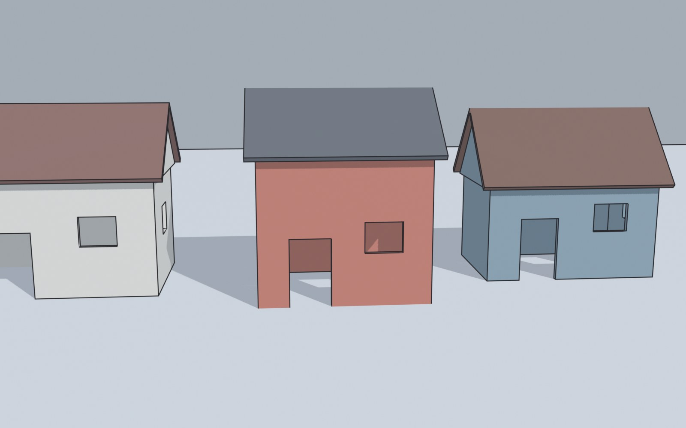
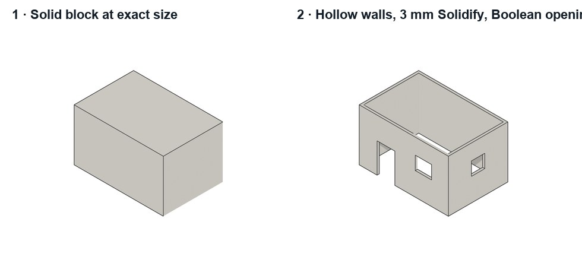
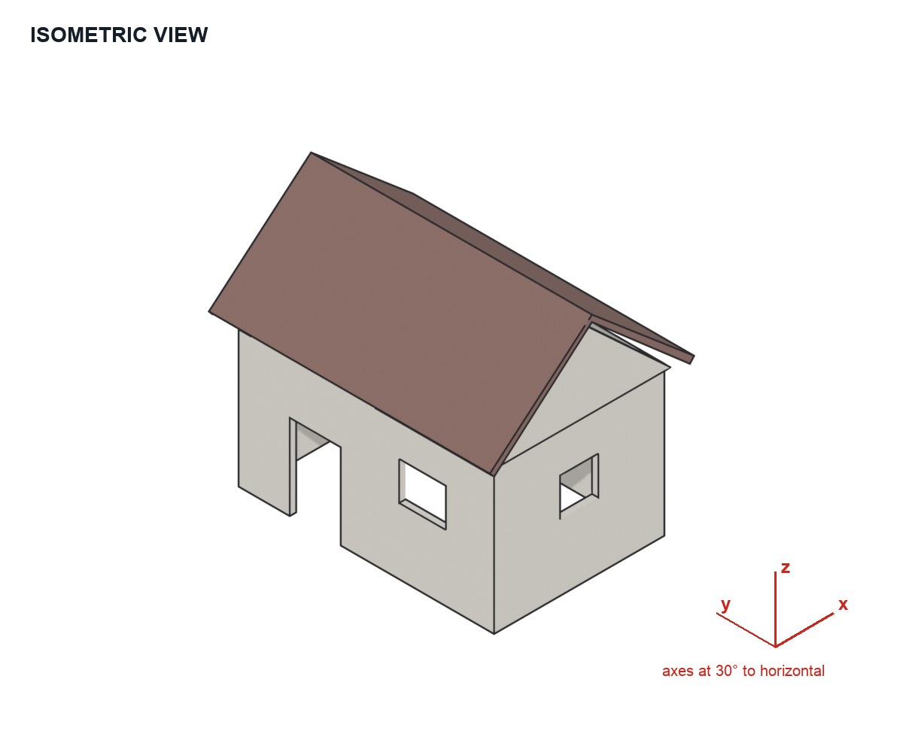
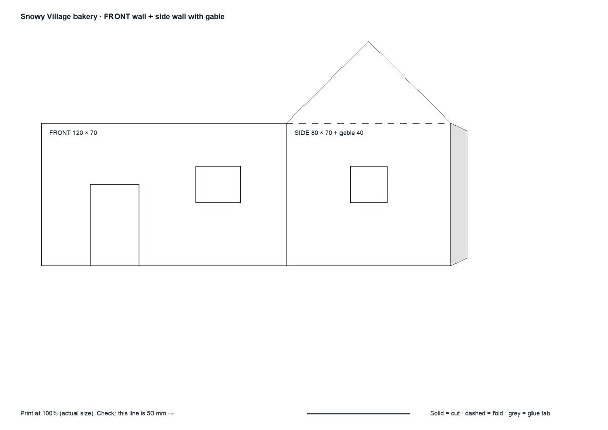
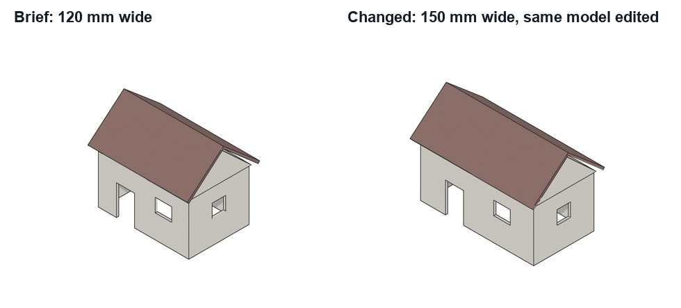
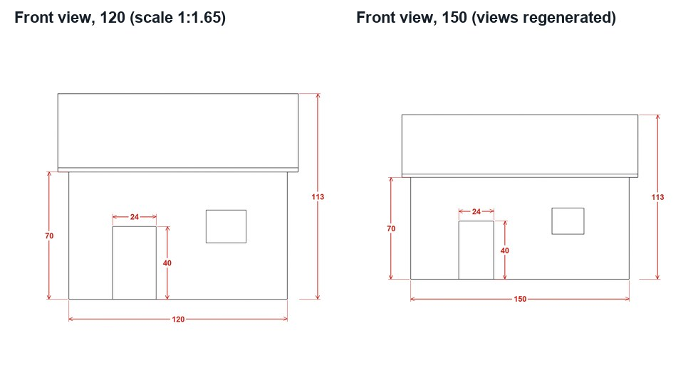

Blender · Communication Technology 11 · Sprint 4 · Lessons 1–10 · digital solid models and technical drawings
BUILD IT TRUE.
Design a Snowy Village building that someone else could make exactly: an accurate solid model, drawings at true size, a card prototype, and a design that survives a change.
16 illustrated stagesTen lessonsScenario: Snowy Village building committeeUnits · Solidify · Boolean · orthographic · isometric

Real Blender renders of the demo buildings (the model is built in millimetres; the bakery is on the left). Your building is your own design.
If it’s not on the drawing, it doesn’t get built.
The Snowy Village committee needs new buildings. They will only approve designs that come with an accurate model and drawings a fabricator can follow without asking.
My supports
Turn on any help you want. Your teacher may have set some for you. They change how the guide helps, not what is assessed.
Committee brief
A building that can be communicated and made accurately.
Design one building for the Snowy Village. It must fit a 150 × 100 mm lot, stand no taller than 150 mm, and be made from 3 mm card or plywood. You will model it in Blender at true size, produce orthographic and isometric drawings, test it with a card prototype, and update it when the committee changes a requirement.
You will hand in
Brief with constraints and a dimensioned sketch
Build_YourName_v2.blend (your own model)
Drawing PDF: third-angle views + isometric, dimensioned, with a title block
Card prototype photos and a discrepancy table
Parts list and fabrication route
Rules
Your model must be built by you in class. Downloaded models or meshes do not count.
Follow the workshop rules for knives and cutting mats.
Guided steps: the Coach can help with tools and terms. Practical check: your decisions only.
Blender is the default. If your teacher approves another solid modeller (for example Tinkercad or Onshape), the same steps apply: exact units, thickness, openings, orthographic and isometric views.
Architects, product designers and fabricators all speak this language.
An architect’s building, a furniture maker’s chair and a game studio’s prop all start as a model at true size. The model produces drawings: orthographic views with dimensions for makers, and isometric or perspective views for clients. Before expensive fabrication, designers test with cheap prototypes in card or foam. The professional elevation in lesson 2 is exactly this kind of drawing. P1
In Nova Scotia, the same skills lead to drafting, architectural technology, carpentry, manufacturing and game-asset careers.
Knowledge first
How a design becomes something others can make.
Units and accuracy
Work in millimetres everywhere. Measure materials before modelling, since thickness decides fit. Set the software’s units first, so every number means the same thing.
Solid modelling
Build from simple volumes at exact size. Keep operations editable: a Solidify modifier gives walls material thickness, and a Boolean modifier cuts openings with a hidden cutter you can move later.
Orthographic projection
Flat views without perspective (front, top and right side) show true sizes. North America uses third-angle layout: the top view above the front and the right side to its right, aligned so sizes carry across.
Isometric views
The three axes are drawn at 30° to the horizontal, so the whole object is visible and edges along the axes keep true proportion, though angles and curves are distorted.
Drawing conventions
Thick lines for visible edges, thin for dimensions, dashed for hidden edges. Dimensions in mm, each size given once, with a title block recording units, projection and material.
Design principles in technical communication
Alignment connects views, hierarchy of line weight separates object from annotation, and consistency between model and drawings is what makes a set trustworthy.
What this assesses
Skills you will show.
Outcome / evidence
Where you show it
COM11 3.1 · editable digital solid model (individual)
Primary achievement evidence: the individual model edit and view update (step 14), plus an observed drawing/model consistency check. A downloaded mesh or a perspective picture is not evidence of a solid model. Guided steps, supports and the prototype are practice, recorded separately from achievement. No registered 3D-modelling skill ID exists yet, so evidence maps to outcomes. N1
Session A · Lesson 1 · com11-26-s04-d01
Take the commission.
The Snowy Village needs a new building. Before any modelling, a designer fixes the constraints: what it is for, how big, what it is made of, and how it will be made.
TODAYChoose the building and its job (25 min), fix the constraints and sketch (40 min).
01
Choose your building and its job in the village
IN SHORTChoose a building with a job; record users, lot, height, material and safety.
READ ALOUD
DOCUMENT: This guide · Build_brief.txt SELECT: One building with one clear purpose TOOLS / ROUTE: Read the brief · choose · record
Read the village brief in Start. Look at the village layout and the identity you designed in Sprint 2.
Choose one building with a clear purpose: bakery, library, fire hall, rink hut, clock tower, general store.
Write who uses it and what a visitor must see from the path (a door, a sign, a lit window).
Record the fixed constraints: the base must fit the 150 × 100 mm lot, maximum height 150 mm, material 3 mm card or 3 mm plywood.
Read the workshop rules for cutting tools and record the safe-work step you will follow.
STEP CHECKLIST
GLOSSARY
Constraint: A fixed requirement the design must meet
Lot: The ground area a building is allowed to occupy
WHYReal design starts with constraints. A building that does not fit its lot or its material cannot be made, however good it looks.
CHECKA building, its users, what visitors must see, the lot size, height limit, material thickness and a safe-work note.
FIXTwo buildings in mind? Choose the simpler one first; you can add details once the views are correct.
WORKED EXAMPLE · DIFFERENT OBJECTThe demo bakery: villagers buying bread; visitors see the door and a warm window; 120 × 80 mm base on the 150 × 100 lot; 3 mm card.
STRETCH (AFTER THE CHECK PASSES)Choose a building with a special shape (a tower or L-plan) once the basic version works.
Method basis: N1. Values and sequence are authored for this project.
02
Sketch it with target dimensions
IN SHORTFreehand front and side; every size in mm; check the constraints.
READ ALOUD
DOCUMENT: Build_brief.txt · squared paper SELECT: Front and side of your building TOOLS / ROUTE: Sketch · label every size in mm
Sketch the front and one side freehand on squared paper. Let one square be 10 mm.
Label the overall width, depth and wall height in millimetres.
Add the roof shape and its height above the walls, and the size and position of each door and window.
Check every size against the constraints: the base fits the lot and the total height is under the limit.
Circle the one dimension you think will be hardest to get right when it is built.
STEP CHECKLIST
GLOSSARY
Scale: The ratio between the model size and the real size, such as 1:50
Dimension: A measured size written on a drawing
WHYA dimensioned sketch is the fastest way to find problems. Numbers written early become the targets your model and drawings must match.
CHECKA front and side sketch with every overall size, the roof height, and each opening in mm, all within the constraints.
FIXNot sure how big a door is at this scale? Use a figure: at 1:50, a 1.8 m person is 36 mm tall.
WORKED EXAMPLE · DIFFERENT OBJECTThe demo sketch: 120 wide, 80 deep, walls 70, roof +40, door 24 × 40, windows 22 × 18.
STRETCH (AFTER THE CHECK PASSES)Work out the real-world size your model represents at 1:50.
Session B · Lesson 2 · com11-26-s04-d02
Measure and speak the language of drawings.
Technical drawings are a language: line types, dimensions and views that any maker can read the same way.
IN SHORTMeasure with a ruler and a caliper; record; measure material thickness.
READ ALOUD
DOCUMENT: A sample (a card box, a block) · ruler and caliper · Build_brief.txt SELECT: Three dimensions of the sample TOOLS / ROUTE: Steel ruler · caliper · record in mm
Take a sample object from the bench (a small box or block).
Measure its width, depth and height with a steel ruler, reading straight on to avoid parallax.
Measure the same three with a caliper: close the jaws gently, read the main scale, then the fine scale.
Record both sets of numbers in a table, to the nearest 0.5 mm (caliper to 0.1 mm).
Measure the card or plywood thickness you will build with. This number goes into your model.
STEP CHECKLIST
GLOSSARY
Caliper: A tool that measures sizes precisely between two jaws
Parallax: A reading error caused by viewing a scale at an angle
A caliper measures between its jaws much more precisely than a ruler. Read the main scale first, then the fine scale.
WHYEvery model is only as accurate as its measurements. The material thickness you measure today decides how the parts fit later.
CHECKA table of ruler and caliper measurements for the sample, and the measured material thickness.
FIXRuler and caliper disagree by more than 1 mm? Measure again: check the caliper reads 0.0 when closed.
WORKED EXAMPLE · DIFFERENT OBJECTThe class card measured 2.9 mm with the caliper, so the demo model uses 3 mm walls.
STRETCH (AFTER THE CHECK PASSES)Measure an opening (the inside of a box) with the caliper’s inside jaws.
04
Read a professional technical drawing
IN SHORTIdentify line types and dimension rules; redraw one view with three dimensions; partner check.
READ ALOUD
DOCUMENT: This step · a drawing sheet SELECT: Line types, dimensions and labels TOOLS / ROUTE: Read · annotate · practise
Look at the professional elevation below. Find: the outline of the building, the openings, the title and the scale.
Learn the line types: thick solid for visible edges, thin for dimension and extension lines, dashed for hidden edges.
Learn dimensioning rules: numbers in mm without units written each time, extension lines that do not touch the object, arrows that touch the extension lines, and each size given once.
On your sketch, redraw one view neatly with a ruler and add three dimensions following the rules.
Swap with a partner. Can they tell the building’s width and door height only from your drawing?
STEP CHECKLIST
GLOSSARY
Elevation: A flat view of one side of a building
Extension line: A thin line that carries an edge out to a dimension
A professional elevation drawing (National Park Service, public domain). Views, line weights and labels let any builder read it the same way.
WHYA drawing is an instruction to someone else. Standard lines and dimensions mean a maker in any workshop reads the same sizes.
CHECKOne neat view with three correctly formatted dimensions that a partner can read without asking.
FIXArrows everywhere? Dimension each size once, outside the object where possible.
WORKED EXAMPLE · DIFFERENT OBJECTA student’s partner read the door as 40 wide because the dimension sat between the wrong extension lines. Moving it fixed the misread.
STRETCH (AFTER THE CHECK PASSES)Find the scale bar on the professional drawing and work out one real size from it.
Method basis: P1. Values and sequence are authored for this project.
Session C · Lesson 3 · com11-26-s04-d03
Build the solid at exact size.
Blender is set to real millimetres, then the main volume is built exactly to your sketch.
TODAYSet units (10 min), block out the building (40 min), save and check (15 min).
05
Set Blender to millimetres
IN SHORTDelete cube; Scene › Units: Metric, 0.001, Millimeters; N for sidebar; save.
READ ALOUD
DOCUMENT: Blender · Build_YourName.blend SELECT: Scene units TOOLS / ROUTE: Properties › Scene › Units
Open Blender, choose File › New › General, and delete the default cube (select it, press X, Delete).
In the Properties editor click the Scene tab (cone and sphere icon). Open Units.
Set Unit System to Metric, Unit Scale to 0.001, and Length to Millimeters.
Press N in the 3D viewport to open the sidebar; you will type exact sizes in its Item tab.
Save as Build_YourName.blend in your COM11 folder. Save again after every step (Ctrl/Cmd+S).
STEP CHECKLIST
GLOSSARY
Unit scale: How many metres one Blender unit represents; 0.001 makes a unit a millimetre
Illustration: Illustration: Scene › Units set to millimetres, and exact dimensions typed in the sidebar’s Item tab.
WHYIf the units are wrong, every number in your drawings is wrong. With Unit Scale 0.001, one Blender unit is exactly one millimetre.
CHECKScene units show Metric, 0.001 and Millimeters, and the file is saved with your name.
FIXGrid looks enormous or tiny? That is the new scale: press Home to frame the view. Sidebar missing? Hover over the viewport and press N.
WORKED EXAMPLE · DIFFERENT OBJECTA student skipped this step and exported a 120-metre bakery. Setting units first avoids it.
STRETCH (AFTER THE CHECK PASSES)Turn on the grid Scale by unit (Overlays) so the grid shows 10 mm squares.
Method basis: B1. Values and sequence are authored for this project.
06
Block out the building at exact size
IN SHORTAdd cube; type dimensions; apply scale; sit on grid; rename; check.
READ ALOUD
DOCUMENT: Build_YourName.blend SELECT: One cube that becomes the walls TOOLS / ROUTE: Add › Mesh › Cube · sidebar Dimensions · Ctrl/Cmd+A › Scale
Choose Add › Mesh › Cube. In the sidebar Item tab type Dimensions X (width), Y (depth) and Z (wall height) from your sketch.
Press Ctrl/Cmd+A and choose Scale to apply it, so the modifiers later measure correctly.
Move it so it sits on the grid: set Location Z to half the wall height.
Rename it Walls in the Outliner (double-click the name).
Check each dimension against your sketch and the lot constraint. Save.
STEP CHECKLIST
GLOSSARY
Apply scale: Makes the current size the object’s real geometry, resetting scale to 1
Outliner: The list of every object in the scene

Real Blender renders of the demo: a solid block at exact size, then hollow walls with 3 mm Solidify and Boolean openings.
WHYA solid block at the true size is the foundation. Applying scale means thickness and cut sizes stay true when you add modifiers.
CHECKA block named Walls with dimensions exactly matching your sketch, scale applied (1, 1, 1), sitting on the grid.
FIXScale not 1.000 after applying? Select the object in Object Mode, not Edit Mode. Can’t see it? Press Numpad . to frame it.
WORKED EXAMPLE · DIFFERENT OBJECTThe demo bakery block: X 120, Y 80, Z 70 mm, located at Z 35.
STRETCH (AFTER THE CHECK PASSES)Add a separate floor slab 3 mm thick under the walls.
Method basis: B1. Values and sequence are authored for this project.
Session D · Lesson 4 · com11-26-s04-d04
Openings, thickness and roof.
A real building has wall thickness, doors and windows. Modifiers add them without destroying your exact block.
TODAYHollow walls and Solidify (20 min), openings with Boolean (25 min), roof (20 min).
07
Hollow the walls and give them material thickness
IN SHORTDelete top and bottom faces; Solidify at material thickness, Offset −1, Even Thickness.
READ ALOUD
DOCUMENT: Build_YourName.blend SELECT: The top and bottom faces of Walls TOOLS / ROUTE: Tab · Face select (3) · X › Faces · Modifier › Solidify
Select Walls, press Tab for Edit Mode and 3 for face select. Click the top face, Shift-click the bottom face (rotate the view to reach it).
Press X and choose Faces. You now have four walls with no thickness. Press Tab to leave Edit Mode.
In the Properties editor open the Modifiers tab (wrench) › Add Modifier › Generate › Solidify.
Set Thickness to your measured material thickness (for example 3 mm), Offset to −1 (thickness grows inward), and tick Even Thickness.
Look from above: the outside size is unchanged and the walls are now exactly one card thick.
STEP CHECKLIST
GLOSSARY
Solidify: A modifier that gives a surface a set thickness
Modifier: A non-destructive operation you can change or remove later
A plan section of the real model: the walls are 3 mm card from Solidify, and the 24 mm door gap comes from a Boolean cut.
WHYCard and plywood have thickness. Modelling it now shows how parts will overlap at corners, which decides whether they fit.
CHECKFour hollow walls with a Solidify modifier set to the measured thickness, outside dimensions unchanged.
FIXWalls got bigger? Offset is +1: set it to −1. Faces vanished completely? You deleted vertices: undo and choose Faces.
WORKED EXAMPLE · DIFFERENT OBJECTWorked on a different object: a student solidified an open box to 3 mm and discovered the lid would need to be 6 mm wider to fit over it.
STRETCH (AFTER THE CHECK PASSES)Predict: if you change the material to 5 mm plywood, which dimensions of your parts change? Write it down, then test it.
Method basis: B2. Values and sequence are authored for this project.
08
Cut openings with Boolean and add the roof
IN SHORTCutter per opening; Boolean Difference (Exact); hide cutters; roof prism with Solidify; check front view.
READ ALOUD
DOCUMENT: Build_YourName.blend SELECT: Cutter boxes for each opening · a roof prism TOOLS / ROUTE: Add cube cutter · Modifier › Boolean (Difference, Exact) · roof: scale top edge to 0
For a door, add a cube and type its Dimensions (for example 24 × 30 × 40; the 30 mm depth passes right through the wall). Move it into the front wall. Rename it Cut_Door.
Select Walls › Add Modifier › Generate › Boolean. Set Difference, Object: Cut_Door, Solver: Exact. Then hide the cutter: Object properties › Viewport Display › Display As: Wire, and untick it for renders.
Repeat for each window. Keep every cutter; editing a cutter later moves or resizes the opening.
Roof: add a cube, type the roof’s width, depth and height (including overhang). In Edit Mode select the top face, press S, Y, 0, Enter to make a ridge, delete the bottom face, then Solidify at your material thickness.
Check the openings’ positions against your sketch from the front view (Numpad 1). Save.
STEP CHECKLIST
GLOSSARY
Boolean: Combining shapes; Difference subtracts one shape from another
Cutter: A hidden object that shapes a Boolean
Illustration: Illustration: the Walls modifier stack. Solidify for thickness, then one Boolean Difference per opening; cutters stay editable.
WHYBooleans keep openings editable: move or resize the cutter and the hole follows. That is what makes a later design change quick.
CHECKWalls with a door and windows cut by Boolean modifiers, editable cutters hidden, and a solidified roof at the planned height.
FIXHole doesn’t go through? Make the cutter deeper than the wall. Strange shading? Set the Boolean solver to Exact. Roof ridge off-centre? Check the cube was centred before scaling Y to 0.
WORKED EXAMPLE · DIFFERENT OBJECTThe demo has three cutters: a 24 × 40 door, a 22 × 18 front window and an 18 × 18 side window.
STRETCH (AFTER THE CHECK PASSES)Add a chimney or a sign bracket as a separate solid, dimensioned in your sketch first.
Method basis: B3. Values and sequence are authored for this project.
Session E · Lesson 5 · com11-26-s04-d05
Orthographic views.
Makers do not build from pretty pictures. They build from flat views that show true sizes.
TODAYRender three views (25 min), lay out and dimension (40 min).
09
Capture front, side and top views from the model
IN SHORTFront, right and top orthographic; outline and cavity; one scale; save; check alignment.
Press Numpad 1 for the front view. Check the view name says Front Orthographic (press Numpad 5 if it says Perspective). Hide cutters.
In Viewport Shading (top right) choose Solid; in its options tick Outline and Cavity, and set the background to a plain Viewport colour of white.
Frame the building (Numpad .) and choose View › Viewport Render Image. Save it as front.png (Image › Save As).
Repeat for the right side (Numpad 3) and top (Numpad 7). Do not zoom between views, so all three share one scale.
Open the three images side by side and check the heights match between front and side, and the widths match between front and top.
STEP CHECKLIST
GLOSSARY
Orthographic: A view without perspective, where parallel lines stay parallel
Third-angle projection: A layout with the top view above the front and the right view to its right, used in North America
Illustration: Illustration: Blender’s front (1), right (3) and top (7) orthographic views of one model, captured at the same scale.
WHYOrthographic views have no perspective, so sizes can be measured. Capturing them all at one zoom keeps them at one scale.
CHECKThree orthographic PNGs at the same scale whose shared sizes line up.
FIXView is distorted? It is still in perspective: press Numpad 5. Views at different scales? Re-render without zooming, or use a camera set to Orthographic.
WORKED EXAMPLE · DIFFERENT OBJECTA student zoomed between views, and the side looked taller than the front. Re-rendering at one zoom fixed the drawing.
STRETCH (AFTER THE CHECK PASSES)Set up an orthographic camera (Camera properties › Type: Orthographic) so you can re-render identical views after changes.
Method basis: B4 · B5. Values and sequence are authored for this project.
10
Lay out a third-angle drawing and dimension it
IN SHORTThird-angle layout; align; dimension each size once; title block; export PDF.
READ ALOUD
DOCUMENT: front.png, side.png, top.png · Photoshop or Google Drawings SELECT: The three views on one sheet TOOLS / ROUTE: Place · align · dimension · title block
Make a sheet (A4 landscape, 3508 × 2480 px). Place the front view lower left, the top view directly above it, and the right side view directly to its right.
Align them: the top of the front and the side must be level; the left edges of the front and top must line up.
Add dimensions in mm: overall width, depth, wall height, total height, and each opening’s size. Each size appears once, in the view where it is clearest.
Use the rules from lesson 2: thin extension and dimension lines, arrows that touch, numbers without units.
Add a title block: title, units (mm), projection (third angle), material, your name. Export as PDF.
STEP CHECKLIST
GLOSSARY
Title block: The box on a drawing that records title, units, projection, material and author
The demo’s third-angle set, from real Blender views: top over front, right side beside it, dimensions in mm, a title block.
WHYA correct drawing set lets someone else build your design without you in the room. Alignment between views is how the reader connects them.
CHECKThree aligned views, every key size dimensioned once, conventions followed, and a complete title block.
FIXViews drift out of line? Use guides or Align tools. Numbers disagree with the model? Read the size from Blender’s sidebar again. The model is the truth.
WORKED EXAMPLE · DIFFERENT OBJECTThe demo drawing gives the door as 24 × 40 on the front view only, not repeated on the side, because each size appears once.
STRETCH (AFTER THE CHECK PASSES)Add a hidden-line (dashed) view of the door edges seen through the side wall.
Method basis: P1. Values and sequence are authored for this project.
Session F · Lesson 6 · com11-26-s04-d06
Isometric explanation.
An isometric view shows the whole object at once, still measurable along its three axes.
TODAYIsometric camera and render (30 min), technical sheet and explanation (35 min).
11
Render an isometric view and explain what it adds
IN SHORTOrthographic camera at 54.736°, 0°, 45°; render; sheet; explain.
READ ALOUD
DOCUMENT: Build_YourName.blend SELECT: The whole building from an isometric angle TOOLS / ROUTE: Add › Camera · Orthographic · rotation 54.736°, 0°, 45° · F12
Choose Add › Camera. In the sidebar set Rotation X 54.736°, Y 0°, Z 45°. Move it diagonally out in front of the building (positive X, negative Y, positive Z).
In Camera properties set Type to Orthographic and adjust Orthographic Scale until the whole building fits with a margin (Numpad 0 to look through it).
Set Render Properties to Workbench (or EEVEE with Freestyle for line drawings) and press F12. Save as iso.png.
Place it on your drawing sheet or a second sheet titled ISOMETRIC VIEW.
Write three sentences: what the isometric shows that the orthographic views cannot, what it cannot show accurately, and who each view is for.
STEP CHECKLIST
GLOSSARY
Isometric: A drawing with the three axes at equal angles, typically 30° to the horizontal

A real Blender isometric render of the demo: three axes at 30° to the horizontal, so edges along the axes keep true proportions.
WHYOrthographic views give exact sizes but need reading skill; isometric views show the whole form at a glance. Makers use both.
CHECKAn isometric render placed on a sheet, and an explanation of what it adds and what it cannot do.
FIXCamera sees nothing? Press Numpad 0 and increase Orthographic Scale. Looks lopsided? Check the rotation values exactly.
WORKED EXAMPLE · DIFFERENT OBJECTThe demo explanation: “The isometric shows the door and side window together, but the roof slope looks shorter than it is.”
STRETCH (AFTER THE CHECK PASSES)Add an exploded isometric: move the roof up 30 mm and render again to show how the parts go together.
Method basis: B5. Values and sequence are authored for this project.
Session G · Lesson 7 · com11-26-s04-d07
Test it in card first.
Before any machine cuts anything, a cheap paper prototype tests your sizes and thickness assumptions.
TODAYPrint, cut and fold (40 min), measure and record the difference (25 min).
12
Make a paper prototype from a net
IN SHORTPrint at 100 %; your own net; cut solid, score dashed; fold and glue; label.
READ ALOUD
DOCUMENT: Bakery_Card_Net_A4.pdf (demo) or your own net · card, knife, cutting mat, ruler SELECT: One joint or the whole shell TOOLS / ROUTE: Print at 100 % · cut · score · fold · glue
Print the net at 100 % (actual size). Check the 50 mm test line with a ruler before you cut.
Make your own net from your drawing sizes: front and side walls in a strip with a glue tab, gables on the side walls, and two roof panels.
Cut on solid lines with a knife on a cutting mat, using a steel ruler and cutting away from your hand. Score (do not cut through) dashed fold lines.
Fold and glue the walls; fit the roof.
Label the prototype with your name and the drawing it came from.
STEP CHECKLIST
GLOSSARY
Net: A flat pattern that folds into a 3D shape
Score: Cutting partway so card folds cleanly

A true-scale card net from the demo’s dimensions: solid lines cut, dashed lines fold, grey tabs glue.
WHYA card prototype costs minutes and cents. It shows fit problems, like thickness at corners and roof overhang, before a laser cutter wastes material.
CHECKA folded card prototype, built from your drawing sizes, printed or drawn at true scale.
FIXPrint too small? The printer scaled it: choose “Actual size” or 100 %. Corners gap? That is the thickness problem: note it for the next step.
WORKED EXAMPLE · DIFFERENT OBJECTThe demo net’s side wall and gable are one piece, so the roof slope and wall height cannot drift apart.
STRETCH (AFTER THE CHECK PASSES)Prototype one joint in 3 mm foam board to see how real thickness changes the corner.
13
Measure the prototype and record the discrepancy
IN SHORTMeasure; compare in a table; explain the biggest difference; decide the fix.
READ ALOUD
DOCUMENT: Your prototype · ruler and caliper · Build_brief.txt SELECT: Width, depth, heights and the openings TOOLS / ROUTE: Measure · compare with the drawing · explain
Measure the prototype’s overall width, depth, wall height and total height.
Record each against the drawing in a table: drawing size, prototype size, difference.
Find the biggest difference and explain its cause: material thickness at corners, cutting error, folding, or a drawing mistake.
Decide whether the fix belongs in the model (for example, subtract thickness from two walls) or in making (cut more carefully).
Update your model if needed and note the change in your brief.
STEP CHECKLIST
GLOSSARY
Discrepancy: A difference between what was planned and what was made
Tolerance: The acceptable amount a size may vary
WHYComparing the thing you made with the drawing is how designers learn where their assumptions were wrong.
CHECKA table comparing drawing and prototype sizes, the largest discrepancy with its cause, and a decision about where the fix belongs.
FIXEverything within 1 mm? Great: record that the assumption held. Off by exactly the card thickness? You found the classic corner problem.
WORKED EXAMPLE · DIFFERENT OBJECTA student’s prototype was 6 mm wider than drawn: two walls overlapped at each end by 3 mm. They shortened the front and back walls by 6 mm in the model.
STRETCH (AFTER THE CHECK PASSES)Set a tolerance for your building (for example ±1 mm) and check every size against it.
Session H · Lesson 8 · com11-26-s04-d08
The brief changes. Update everything.
The village committee changes one requirement. A good model and drawing set update quickly and stay consistent.
Practical check: change one constraint and update the model and views
IN SHORTKnowledge check; v2 copy; read the card; change the model; re-render; update dimensions; explain.
READ ALOUD
DOCUMENT: Committee change card · Build_YourName.blend · your drawing set SELECT: The dimensions the change affects TOOLS / ROUTE: Your own decisions · sidebar dimensions · cutters · re-render views
Complete the knowledge check your teacher opens, then save a copy of your file as Build_YourName_v2.blend.
Read your committee change card (for example: the lot is now 150 mm wide, the door must be 30 mm wide, or the material is now 5 mm plywood).
Decide on your own which parts, cutters and modifiers must change. Make the change in the model.
Re-render all orthographic views and the isometric at the same scale as before, and update every affected dimension on the sheet.
Write three sentences: what changed, which other sizes it forced to change, and how you checked the model and drawings still agree.
Card
The committee says
1 · Wider lot
“Your lot is now 150 mm wide. Use the width.”
2 · Accessible door
“The door must be 30 mm wide and 44 mm tall.”
3 · New material
“The fabricator only has 5 mm plywood.”
4 · Height limit
“The total height must be 100 mm or less.”
Independent evidence: this step is the main achievement evidence for Sprint 4. Your teacher may watch one edit live.
STEP CHECKLIST
GLOSSARY
Consistency: Every view and dimension agreeing with the model

The same demo model edited from 120 to 150 mm wide. The walls, openings and roof updated because they were built with modifiers and cutters.
WHYDesigns change. A model built with exact dimensions, modifiers and editable cutters updates in minutes, and the drawings must follow it exactly.
CHECKA v2 model and drawing set that meet the card, with every affected dimension updated and consistent between model and views, plus an explanation.
FIXA dimension doesn’t match? The model is the truth: read it from the sidebar again. (Independent step: the Coach may explain tools but not decide your edits.)
WORKED EXAMPLE · DIFFERENT OBJECTWorked example on a different model: a student’s shed door grew from 20 to 26 mm. They moved the window cutter 6 mm to keep the spacing even and updated two dimensions.
STRETCH (AFTER THE CHECK PASSES)Handle two cards at once and explain which change forced the most updates.
Method basis: B2 · B3. Values and sequence are authored for this project.
Session I · Lesson 9 · com11-26-s04-d09
Repair before anything is cut.
Reserved time to make the model and drawings agree perfectly. No file goes to fabrication with an unresolved fit fault.
TODAYConsistency audit (40 min), repairs and sign-off (25 min).
15
Audit consistency and repair
IN SHORTChecklist; compare every dimension with the model; fix model first; partner read; sign off.
READ ALOUD
DOCUMENT: v2 model · drawing set · prototype table SELECT: Every dimension on the sheet TOOLS / ROUTE: Checklist · sidebar · fix · re-render
Tick through the checklist: units mm; scale applied; Solidify equals the material thickness; each opening matches its cutter; views at one scale; third-angle layout aligned.
Check every dimension on the sheet against the model’s sidebar values. Circle any mismatch in red.
Fix each mismatch in the model first, then re-render and update the drawing.
Swap sheets with a partner. They read three sizes from your drawing and you check them against the model.
Sign the fabrication check in your brief only when there are no open faults.
STEP CHECKLIST
GLOSSARY
Audit: A careful check of work against a standard or checklist

Front views from the demo at 120 and 150 mm: after a change, every view is regenerated from the model, not redrawn by hand.
WHYFabrication is expensive and slow to redo. A careful audit catches mistakes while they are still cheap to fix.
CHECKA completed checklist, all mismatches fixed, a partner check that matched the model, and a signed fabrication check.
FIXA partner misreads a size? The drawing is unclear even if it is correct: move or clarify that dimension.
WORKED EXAMPLE · DIFFERENT OBJECTA student found their top view was at a different scale from the others because it was rendered after zooming. Re-rendering fixed it.
STRETCH (AFTER THE CHECK PASSES)Help a classmate audit their set after yours is signed off.
Session J · Lesson 10 · com11-26-s04-d10
Defend the design.
Explain your model, projection and symbols, and choose the simplest way to make it.
TODAYTechnical bundle (25 min), defence and parts list (40 min).
16
Defend your technical design and plan fabrication
IN SHORTHand in the bundle; parts list; choose a route; explain views, modifiers and symbols; live edit.
READ ALOUD
DOCUMENT: Technical bundle · Student OS SELECT: Model, drawings, prototype, parts list TOOLS / ROUTE: Hand in · two-minute conversation
Hand in: Build_YourName_v2.blend, the drawing PDF (orthographic + isometric), prototype photos, the discrepancy table and the brief.
Write a parts list: each part, its size, material and quantity (walls, gables, roof panels).
Choose the simplest fabrication route (hand-cut card, laser-cut card or plywood) and give one reason.
Be ready to explain: why third-angle views and the isometric, how you modelled thickness and openings, and one symbol or line type on your sheet.
Show one live edit in Blender (move a window cutter) and explain which views would change.
STEP CHECKLIST
GLOSSARY
Parts list: A table of every part to be made, with size, material and quantity
WHYA technical designer’s work is judged by whether someone else can make it correctly. Explaining your choices shows you understand the system, not just the steps.
CHECKA complete bundle, a parts list, a fabrication route with a reason, and a defence with one live edit.
FIXNervous? Rehearse with the sentence frames in My supports and your partner audit.
WORKED EXAMPLE · DIFFERENT OBJECTThe demo parts list: front and back 120 × 70; two sides 80 × 70 with 40 mm gables; two roof panels 132 × 61; 3 mm card.
STRETCH (AFTER THE CHECK PASSES)Compare the cost and time of hand-cutting versus laser-cutting your parts.
Method basis: N1. Values and sequence are authored for this project.
Before you submit
Student QA.
Evidence conversation
Keep it short and specific.
SENTENCE FRAMESThe constraint that shaped my design most was ___ because ___. · The prototype showed ___, so I changed ___. · When the committee changed ___, I also had to update ___.
Drawing of the South Elevation--Amoureaux House in Ste Genevieve MO.png · Drawn by James F. O’Gorman · Public domain · source. Processed as stated in each caption.
Messschieber misst Kugeldurchmesser.jpg · Rhetos · CC0 · source. Processed as stated in each caption.
Figures marked Illustration are drawn, not screenshots. Step values are starting points authored for this project. Draft for teacher review; not yet classroom-piloted.